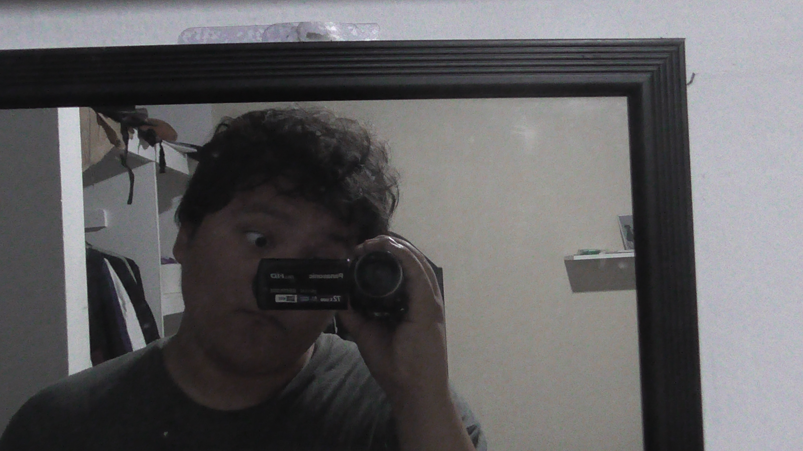
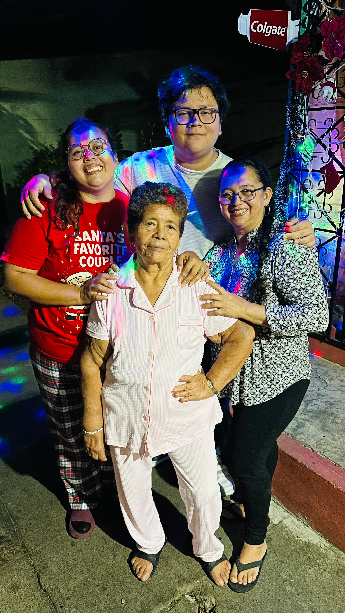

Mi historia
Creci en Santa Ana. Fui al programa Oportunidades de FGK y actualmente estudio en la ESEN Ingeniería de Software y Negocios Digitales

Creci en Santa Ana. Fui al programa Oportunidades de FGK y actualmente estudio en la ESEN Ingeniería de Software y Negocios Digitales
Vivo con mi mama, pero la mayor parte de mi vida tambien viví con mi hermana y mi abuela paterna.

A continuación, un resumen de mi trayectoria académica:
| Institución | Carrera / Especialidad | Estado |
|---|---|---|
| Escuela Superior de Economía y Negocios (ESEN) | Ingeniería de Software y Negocios Digitales | En curso |
| Escuela Cristiana Oasis Santa Ana | General y Teológico | Completado |
Algunas de las cosas que más disfruto hacer en mi tiempo libre incluyen: